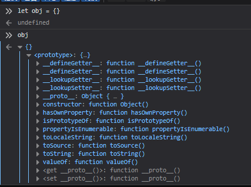
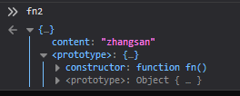
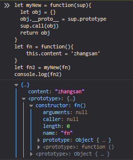

let obj = {}
let fn = function(){
this.content = 'zhangsan'
}
let fn2 = new fn()fn2是fn实例化出来的一个对象，要了解new做了那些事情，先看一下一个普通对象有哪些东西。
普通对象：

实例化对象fn2：

1：普通对象的__proto__指向了Function.prototype而fn2的__proto__指向了fn.prototype,所以new的过程中改变了fn2的__proto__的指向，让其指向了fn的prototype。
2：fn2中有着fn中的content属性，说明fn中的this指向了fn2，所以new的过程中经历this指向的改变，并调用了fn方法给fn1添加content属性。fn.call(fn1)。
完整过程：
let fn = function(){
this.content = 'zhangsan'
}
let fn2 = new fn()
过程：
let fn2 = {} //创建出一个空对象
fn2.__proto__ = fn.prototype //改变fn2的__proto__指向
fn.call(fn2) //改变fn的this指向实现一个自己的new：
let myNew = function(sup){
let obj = {}
obj.__proto__ = sup.prototype
sup.call(obj)
return obj
}
let fn = function(){
this.content = 'zhangsan'
}
let fn2 = myNew(fn)
console.log(fn2)
